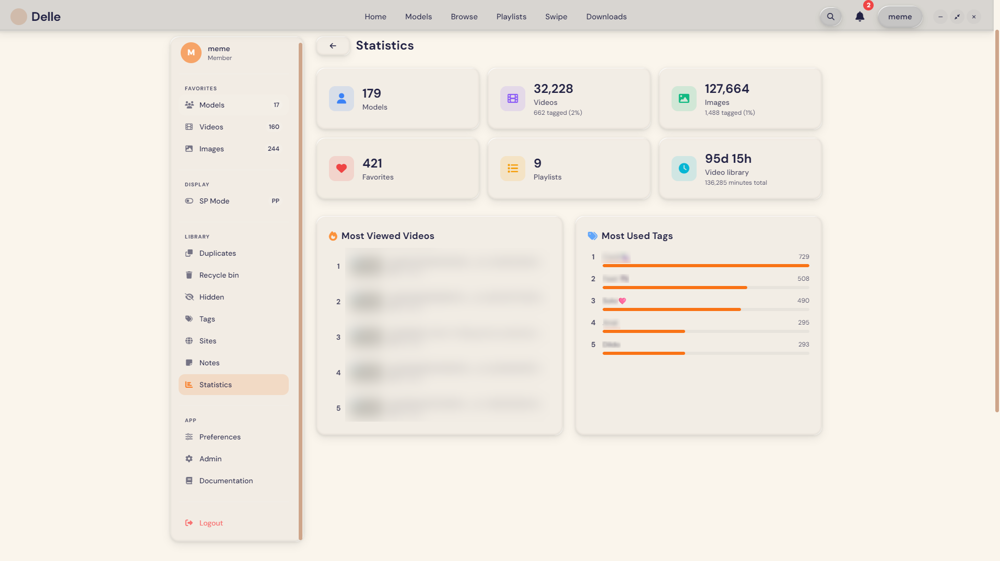

Statistics
Understand your whole library at a glance
A built-in dashboard adds up everything you have — models, videos, images, favorites and playlists — plus your total video runtime. See your most-viewed videos and most-used tags side by side, so you always know what's in your library and what you actually reach for.
- Totals across your entire collection
- Most-viewed videos, ranked
- Most-used tags as a live bar chart